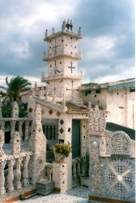
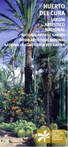
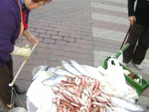
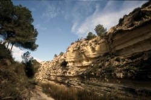
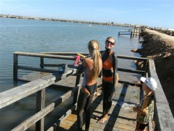

Ausflugsziele und Fiestas an der Costa Blanca
Wer an der Costa Blanca Urlaub macht, der sollte nicht versäumen sich Torrevieja anzuschauen. Torrevieja hat 105.000 gemeldete Einwohner, aber in den Sommermonaten kann sich die Zahl schon mal auf 500.000 erhöhen. Torrevieja erlebte in den vergangenen Jahren einen Boom und stieg auf in eine “Mondäne Metropole“ mit internationalem Flair. Viele Fussgängerzonen wurden mit Palmen verschönt. In den Boutiquen und kleinen Geschäften können Sie extravagante Sachen finden.
Für Naturfreunde empfiehlt es sich mit dem Glasbodenschiff einen Ausflug auf die Insel Tarbarca zu unternehmen. Die kleine Insel zum Ausruhen, ohne Auto! Direkt am Hafen können Sie früh morgens für ein paar Euro eine ganze Tüte frischen Fisch am Kai kaufen.
Auch ein Spaziergang auf der Mole (1,8 km lang) von Torrevieja kann interessante Eindrücke hinterlassen und für gute Fotomotive sorgen. Am Abend lohnt sich ein Weg auf der Promenade, hier ist halb Torrevieja unterwegs, sehen und gesehen werden ist die Devise . Ausserdem gibt es hier diverse Sandbaukünstler, die ihre Werke zur Schau stellen, die natürlich auch ideale Fotomotive sind.
Auch in Orihuela-Costa gibt es einen Naturpfad. Zwischen Cabo Roig und dem Stadtteil Aquamarina verlassen Sie die Promenade zum Meer hinunter. Auf einem gekennzeichneten Weg, mit Pfählen und Tauen. Hier können Sie die Seeluft, gepaart mit den Düften von Wildkräutern, die unmittelbar neben dem Weg wachsen geniessen. Man kann auch runter über die Felsen zu einem kleinen Kiesstrand gelangen und unter Umständen Fossilien finden. Gehen Sie einen romantischen Küstenweg entlang vom Strand Cala Caleta beim Sporthafen in Cabo Roig bis Cala Capitán und weiter auf der Promenade Richtung Hotel.
Sehr empfehlenwert ist auch ein Ausflug nach Rojales zu den Höhlen und zum Muschelhaus. Zwei Höhlen sind noch bewohnt, die anderen Höhlen beherbergen Ateliers, sowie eine Höhlenbar. Das Muschelhaus liegt direkt hinter den Höhlen und der „spanische Baumeister“ hat 11 Jahre daran gebaut, um alles innen und aussen mit Muscheln zu verkleiden.
Eine ganze Menge Fiestas gibt es über das Jahr verteilt, angefangen von den Christen und Mauren Feiern, den Osterprozessionen, der Feria de Mayo etc. Interessant ist es auch, einmal bei einer Riesenpaella mit dabei zu sein.
Von der süblichen Costa Blanca aus lassen sich viele interessante Ausflugsziele ansteuern. Im Norden liegt Alicante, die pulsierende Grossstadt mit 400.000 Einwohnern. Alicante hat sehr schöne Parkanlagen und eine schöne Altstadt. Eine der grössten mittelalterlichen europäischen Festungen ist die Burg Santa Barbara, die sich über einen grossen Teil des Berges Benacatil erstreckt. Die Burg kann man über die Strasse, oder mit einem Personenaufzug, in den man über einen Fussgängertunnel von der N-332 gelangt erreichen. Von hier aus hat man einen fantastischen Blick auf Alicante und den Hafen! Es lohnt sich also der Mühe! Vom Burgplateau führt ein kleiner Weg über eine Brücke ins alte Alicante, mit Häusern, die in den Berg hineingebaut wurden. Alicante wird mittlerweile von mehreren Kreuzfahrtschiffen angesteuert. Es gibt ausserdem eine Fährverbindung nach Algerien.
Auch das Universitätsgelände von Alicante hinterlässt zahlreiche positive Eindrücke. Der Campus umfasst ein Gelände von ca. 1 Million Quadrat Meter und enthält ein Akademisches Museum.
Universidad de Alicante
Carretera San Vicente del Raspeig s/n
03690 San Vicente del Raspeig – Alicante
+34 965 903 400 Telefon
+34 965 903 464 Fax
Nur ca. 20 km von Alicante entfernt liegt das kleine malerische Dorf Busot. Der Ort ist die ideale Ergänzung zum riesigen touristischen Angebot an der Küste der Costa Blanca. Besuchen Sie unbedingt die Tropfsteinhöhle in Busot, genannt die Cuevas del Canelobre (sehr empfehlenswert). In einigen Sommermonaten werden in der Höhle Konzerte veranstaltet. Von dem Hochplateau vor der Höhle haben Sie eine grandiose Fernsicht.
Besuchen Sie Elche, die besondere Stadt der zig tausend Palmen. Elche gehört zum Weltkulturerbe der Unesco. Wenn man in Elche ist, gehört ein Besuch im Park Huerta del Cura unbedingt dazu. Dieser herrlich angelegte Park enthält viele Palmen und andere Bäume mit Namensschildern von Paten. Elche ist auch bekannt für seine Schuhindustrie und Sie können hier im Fabrikverkauf günstig Schuhe erwerben.
Santa Pola ist einen weitern Ausflug wert. Santa Pola hat die grösste Fischerreiflotte von Spanien. Das Leben im Mittelmeer können Sie im Meerwasseraquarium von Santa Pola eindrucksvoll betrachten. Santa Pola wurde auf den Ruinen eines römischen Dorfes angesiedelt als Portus Ilicitanus (wörtlich) Hafen von Elx (Elche). Das archäologische Museum lohnt ebenfalls einen Besuch. Auch die nahe in Sichtweite gelegene Insel Tabarca kann man in kürzester Zeit von hier erreichen.
Guardamar kurz hinter Torrevieja gelegen, hat herrliche kilometerlange Sandstrände, sehr gepflegte Parkanlagen, teilweise mit Tieren, und ausgedehnte Pinienhaine. Ein guter Platz zum Picknicken mit Kindern. Alte Tradition hat in Guardamar der Fischverkauf vom Transportkarren/Schiebkarre. Jeden Morgen Klock 11:00 Uhr startet eine Fischverkäuferin bei der Kirche in der Stadtmitte und preist lautstark die gefangenen Fische der Nacht an. Ein Ausflug nach Guardamar lohnt immer!
Orihuela, die alte Bischofsstadt, wurde in den letzten Jahren mehr und mehr herausgeputzt. Orihuela liegt 30 km von Orihuela-Costa entfernt im Landesinneren. Alte Gebäude wurden liebevoll restauriert. Besuchen Sie das Kloster von Orihuela am Berg über der Stadt. Interessant sind auch die Museen der Stadt. Orihuela versteht es Feste zu feiern. Im zeitigen Frühjahr findet der Mittelalterliche Markt in Orihuela statt, mittlerweile einer der grössten Spaniens und ein absolutes Muss. Wer diesen Markt nicht gesehen hat, der hat echt etwas versäumt. Die jährlichen Umzüge der Semana Santa und der Mauren und Christen sind ebenfalls sehr sehenswert
Im südlichsten Zipfel der Costa Blanca liegt der Ort Pilar de la Horadada. Eine niedliche Kleinstadt mit eigenem Charme. Fahren Sie weiter durch den Ort Richtung Orihuela, kommen sie bei der Ortsausfahrt von Pilar del la Horadada an einen grossen Kreisverkehr bei einer Golfanlage, fahren Sie gerade weiter und achten Sie auf der rechten Strassenseite auf ein Wasserbecken, dort rechts in eine kleine Strasse abbiegen an Orangen/Zitronenfeldern vorbei, die Strasse geht bergab und wieder hoch. Fahren Sie bis zu den Tennisplätzen von Campoverde einem Ortsteil von Pilar del la Horadada, dort parken. Von hier gehen Sie zu Fuss den Schildern nach, in das Naturschutzgebiet vom Rio Seco. Ein einzigartiges Naturreservoir mit einem Trampelpfad durch die Schlucht vom Rio Seco.
Weiter in südlicher Richtung auf der N-332 an Pilar del la Horadada vorbei kommen Sie ins Bundesland Murcia. Fahren Sie von der N-332 kommend, beim Kreisverkehr nach der Autobahnunterführung Richtung 9 Uhr aus dem Kreisverkehr. Folgen Sie dieser Strasse. Nach einem weiteren Kreisverkehr, den Sie gerade passieren, kommen Sie an einen weiteren Kreisverkehr. Hier gibt es zwei Varianten:
Variante 1: Sie fahren wieder Richtung 9 Uhr aus diesem Kreisverkehr und kommen zu den Salzseen von San Pedro mit Flamingos (Parkmöglichkeiten zum Fotografieren sowie ein Wanderweg, der bis zum Meer geht) oder direkt bis zum Meerfahren und dort links parken. Dort befindet sich der kilometerlanger Naturstrand Playa de Torre Derribada, an dem Sie Naturschwämme finden können.
Variante 2: Beim vorerwähnten Kreisverkehr gerade aus weiter fahren. Kurz danach rechts befindet sich das Tallasio Wellnessbad mit 34 Grad warmen Meerwasser. Oder Sie fahren weiter bis Lo Pagan. Es gibt einen ausgebauten Weg (Promenade), hier hat man die Möglichkeit seinen Körper mit heilsamen Schlamm einzureiben.
Weiter durch Lo Pagan nach Santiago de la Ribera am Mar Menor. Zwei sehr gute Fischrestaurants befinden sich direkt am Strand. Von Santiago de la Ribera gibt es eine Fährverbindung (Personenfähre) zum Hafen nach La Manga. (siehe Download Personenfähre Mar Menor [ganzjährig]).
Noch weiter in südlicher Richtung kommen Sie nach San Javier, wo sich auch ein Flughafen befindet, der von vielen Fluggesellschaften angeflogen wird (Flugstatus finden Sie im Hauptmenü). Noch weiter südlich an Baumwollfeldern vorbei befindet sich die Kleinstadt Los Alcazares mit herrlicher Promenade am Mar Menor. Das Mar Menor ist ein Binnenmeer und hat deshalb auch höhere Wassertemperaturen als das normale Mittelmeer. Ausflüge hierher sind sehr zu empfehlen.
La Union, Cartagena, Murcia Calasparra, Caravacca